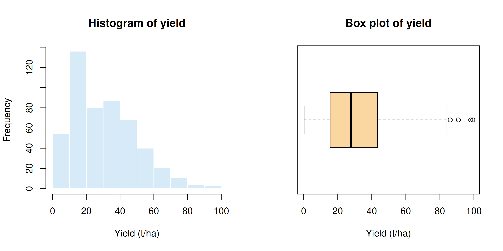
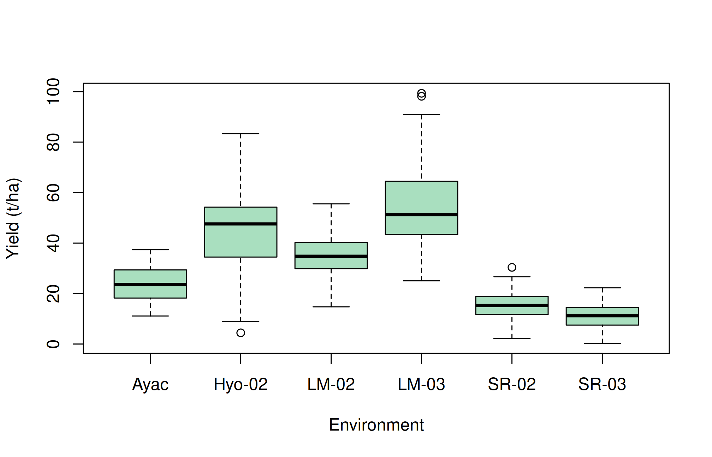
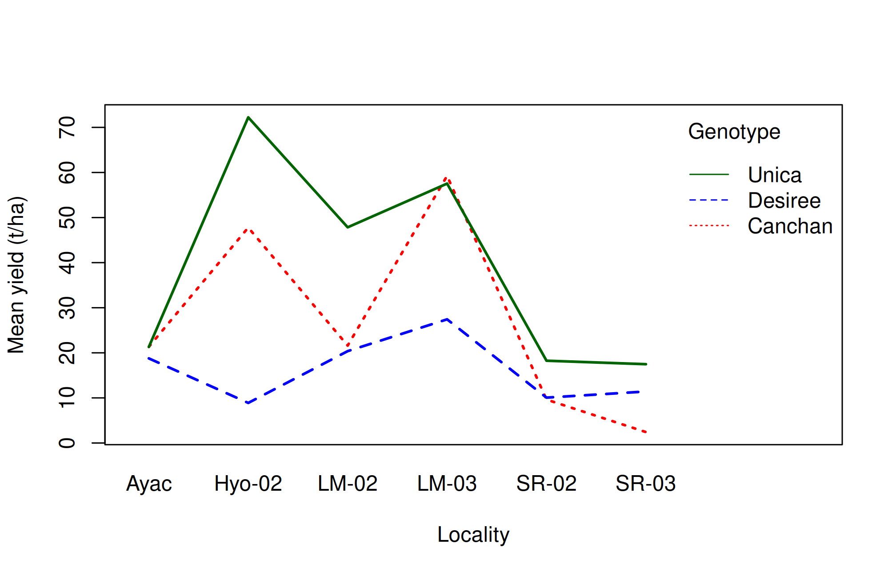
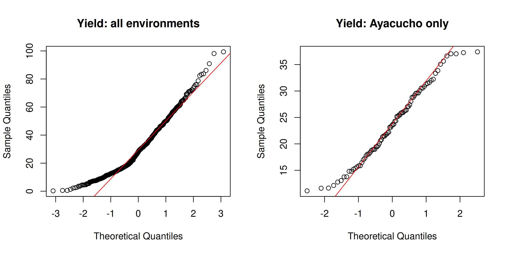
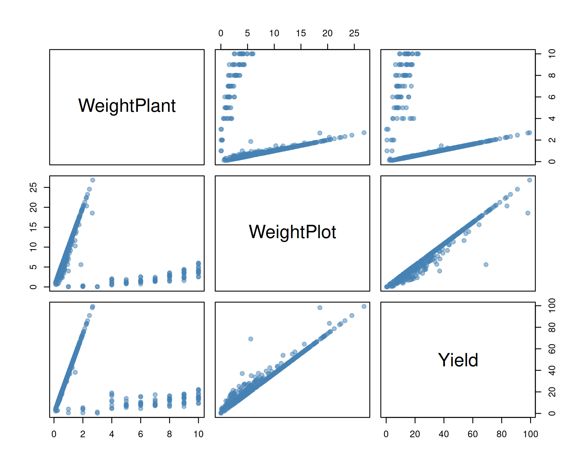
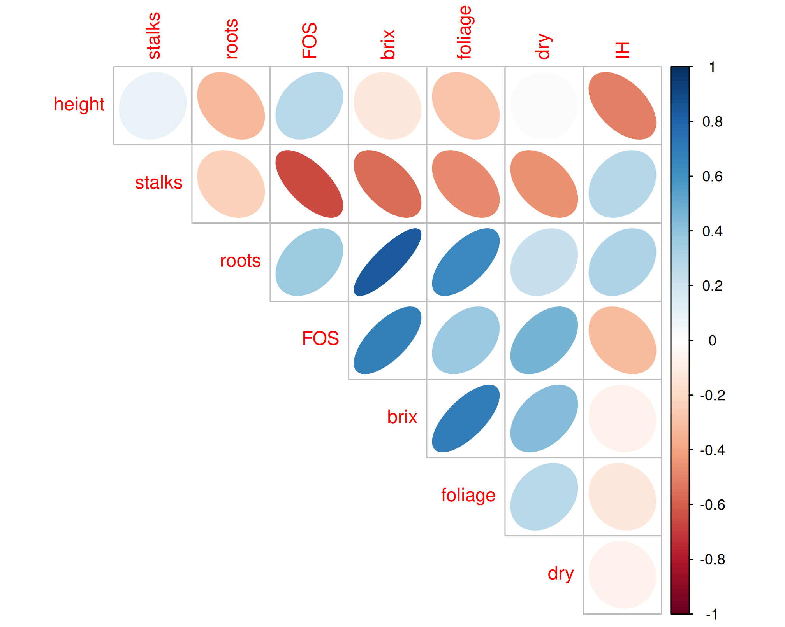

library(agricolae)
data(plrv)17 Exploring a multi-environment trial
Learning outcomes
Carry out a systematic exploratory data analysis: check structure, missing values and balance, summarise and tabulate by groups, detect outliers within groups, check normality and choose transformations.
Exploratory data analysis (EDA), a term introduced by John W. Tukey, is the detective work done before any formal test or model. Its purpose is to get to know the data: check that they were entered correctly, see how each variable is distributed, find unusual observations and discover relationships worth testing. EDA combines the summaries of Chapter 7 with the graphs of Chapter 6.
A useful checklist:
- Check the structure: number of rows and columns, variable types, factor levels.
- Look for missing values and data-entry errors.
- Summarise and plot each variable (univariate analysis).
- Summarise and tabulate by groups.
- Look for outliers.
- Check the shape of the distributions (symmetry, normality) and consider transformations.
- Examine relationships between variables (bivariate and multivariate analysis).
17.1 The example data
We use the plrv data from the agricolae package. The International Potato Center (CIP), Peru, evaluated 28 potato genotypes (clones from a population selected for resistance to potato leaf roll virus, plus the check varieties Canchan, Desiree and Unica) in six environments, with three replications each. Tuber yield (t/ha) and weights per plant and per plot (kg) were recorded.
17.2 Structure of the data
dim(plrv)[1] 504 6str(plrv)'data.frame': 504 obs. of 6 variables:
$ Genotype : Factor w/ 28 levels "102.18","104.22",..: 1 2 3 4 5 6 7 8 9 10 ...
$ Locality : Factor w/ 6 levels "Ayac","Hyo-02",..: 1 1 1 1 1 1 1 1 1 1 ...
$ Rep : int 1 1 1 1 1 1 1 1 1 1 ...
$ WeightPlant: num 0.51 0.345 0.542 0.989 0.625 ...
$ WeightPlot : num 5.1 2.76 4.34 8.9 5 2.56 2.48 10.1 8.25 4.88 ...
$ Yield : num 18.9 12.8 20.1 36.6 23.1 ...head(plrv) Genotype Locality Rep WeightPlant WeightPlot Yield
1 102.18 Ayac 1 0.5100 5.10 18.89
2 104.22 Ayac 1 0.3450 2.76 12.78
3 121.31 Ayac 1 0.5425 4.34 20.09
4 141.28 Ayac 1 0.9889 8.90 36.63
5 157.26 Ayac 1 0.6250 5.00 23.15
6 163.9 Ayac 1 0.5120 2.56 18.96Rep is stored as an integer, but it identifies replications, so it should be a factor:
plrv$Rep <- factor(plrv$Rep)
nlevels(plrv$Genotype)[1] 28levels(plrv$Locality)[1] "Ayac" "Hyo-02" "LM-02" "LM-03" "SR-02" "SR-03" 17.3 Missing values and data checks
sum(is.na(plrv)) # total number of missing values[1] 0colSums(is.na(plrv)) # missing values per column Genotype Locality Rep WeightPlant WeightPlot Yield
0 0 0 0 0 0 There are no missing values. Next check that the design is balanced, i.e. every genotype appears once in every replication of every locality:
table(plrv$Locality, plrv$Rep)
1 2 3
Ayac 28 28 28
Hyo-02 28 28 28
LM-02 28 28 28
LM-03 28 28 28
SR-02 28 28 28
SR-03 28 28 28all(table(plrv$Genotype, plrv$Locality) == 3)[1] TRUEEach locality has 28 plots per replication and every genotype has three plots in each locality, so the data are complete and balanced. Also look for impossible values, such as negative yields:
range(plrv$Yield)[1] 0.2469 99.350017.4 Univariate analysis
summary(plrv$Yield) Min. 1st Qu. Median Mean 3rd Qu. Max.
0.247 15.537 27.910 30.670 43.364 99.350 par(mfrow = c(1, 2))
hist(plrv$Yield, col = "#D6EAF8", border = "white",
main = "Histogram of yield", xlab = "Yield (t/ha)")
boxplot(plrv$Yield, horizontal = TRUE, col = "#FAD7A0",
main = "Box plot of yield", xlab = "Yield (t/ha)")
par(mfrow = c(1, 1))The distribution is skewed to the right, with a long tail of high yields. A stem-and-leaf plot shows the same shape while keeping the actual values:
stem(round(plrv$Yield))
The decimal point is 1 digit(s) to the right of the |
0 | 011122344444
0 | 5555555667777777778888888899999999999
1 | 00000000111111111111222222222233333333333333333444444444444444
1 | 55555555555555566666666666666677777777777777778888888888888899999999
2 | 00000000001111111112222222222333444444444
2 | 55555566666666677777788889999999
3 | 00000000000001111111111111111222222333333333333444444444444
3 | 55566666666667777777778888889999999
4 | 00000011111111222222333334444444444
4 | 5555566666667777777777788999999
5 | 0000000011111222333344444
5 | 55666667777788899
6 | 00000011122344
6 | 555566799
7 | 01111224
7 | 5669
8 | 234
8 | 6
9 | 1
9 | 8917.5 Tabulation and summaries by group
17.5.1 Frequency and contingency tables
table() counts observations in each category; with two factors it gives a contingency (two-way) table. xtabs() does the same with a formula, and prop.table() converts counts to proportions. Here yields are first grouped into classes with cut():
plrv$YieldClass <- cut(plrv$Yield, breaks = c(0, 10, 20, 30, 40, 100),
labels = c("<10", "10-20", "20-30", "30-40", ">40"))
tab <- xtabs(~ Locality + YieldClass, data = plrv)
tab YieldClass
Locality <10 10-20 20-30 30-40 >40
Ayac 0 29 37 18 0
Hyo-02 2 2 6 18 56
LM-02 0 5 18 39 22
LM-03 0 0 4 11 69
SR-02 15 56 12 1 0
SR-03 37 44 3 0 0# Row percentages: distribution of yield classes within each locality
round(prop.table(tab, margin = 1) * 100, 1) YieldClass
Locality <10 10-20 20-30 30-40 >40
Ayac 0.0 34.5 44.0 21.4 0.0
Hyo-02 2.4 2.4 7.1 21.4 66.7
LM-02 0.0 6.0 21.4 46.4 26.2
LM-03 0.0 0.0 4.8 13.1 82.1
SR-02 17.9 66.7 14.3 1.2 0.0
SR-03 44.0 52.4 3.6 0.0 0.0# Add row and column totals
addmargins(tab) YieldClass
Locality <10 10-20 20-30 30-40 >40 Sum
Ayac 0 29 37 18 0 84
Hyo-02 2 2 6 18 56 84
LM-02 0 5 18 39 22 84
LM-03 0 0 4 11 69 84
SR-02 15 56 12 1 0 84
SR-03 37 44 3 0 0 84
Sum 54 136 80 87 147 50417.5.2 Summary statistics by group
aggregate() computes any function for each group. Here we compute the mean, standard deviation and coefficient of variation of yield in each locality:
cv <- function(x) sd(x) / mean(x) * 100
loc_stats <- aggregate(Yield ~ Locality, data = plrv,
FUN = function(x) c(mean = mean(x), sd = sd(x), cv = cv(x)))
loc_stats <- do.call(data.frame, loc_stats)
names(loc_stats) <- c("Locality", "Mean", "SD", "CV")
loc_stats[order(-loc_stats$Mean), ] Locality Mean SD CV
4 LM-03 53.83 16.339 30.35
2 Hyo-02 45.73 14.629 31.99
3 LM-02 34.64 8.370 24.16
1 Ayac 23.70 7.053 29.76
5 SR-02 14.95 5.495 36.75
6 SR-03 11.15 4.989 44.73Mean yields range from about 11.2 t/ha to 53.8 t/ha across environments. A two-way table of means by genotype and locality is obtained with tapply():
gl <- with(plrv, tapply(Yield, list(Genotype, Locality), mean))
round(head(gl), 1) Ayac Hyo-02 LM-02 LM-03 SR-02 SR-03
102.18 24.9 28.9 32.0 46.8 13.5 11.8
104.22 21.5 53.5 39.2 50.4 16.0 7.1
121.31 23.5 41.3 38.4 63.7 2.5 11.3
141.28 31.8 60.5 34.0 77.6 19.2 15.5
157.26 19.7 41.4 45.2 77.0 24.0 14.6
163.9 17.5 29.5 28.9 32.0 12.7 7.8and the best and worst genotypes over all environments are:
g <- sort(tapply(plrv$Yield, plrv$Genotype, mean), decreasing = TRUE)
round(head(g, 5), 2)141.28 Unica 319.20 235.6 157.26
39.76 39.10 38.76 38.63 36.95 round(tail(g, 3), 2) 221.19 163.9 Desiree
22.98 21.42 16.16 17.5.3 Graphs by group
boxplot(Yield ~ Locality, data = plrv, col = "#A9DFBF",
ylab = "Yield (t/ha)", xlab = "Environment")
The box plot shows that most of the variation in yield comes from differences between environments. The right skew seen in the overall histogram is largely the result of mixing environments with very different mean yields.
An interaction plot shows whether genotypes rank similarly in all environments. Here we plot the three check varieties:
checks <- droplevels(subset(plrv, Genotype %in% c("Canchan", "Desiree", "Unica")))
with(checks, interaction.plot(Locality, Genotype, Yield,
col = c("red", "blue", "darkgreen"), lwd = 2, ylab = "Mean yield (t/ha)"))
The lines are not parallel, which suggests genotype × environment interaction: the varieties do not respond in the same way in every environment.
17.6 Outliers
The box-plot rule (Chapter 6) flags as outliers the observations beyond \(Q_1 - 1.5\,\text{IQR}\) and \(Q_3 + 1.5\,\text{IQR}\):
out <- boxplot.stats(plrv$Yield)$out
plrv[plrv$Yield %in% out, c("Genotype", "Locality", "Rep", "Yield")] Genotype Locality Rep Yield
368 141.28 LM-03 2 90.89
378 319.20 LM-03 2 99.35
382 351.26 LM-03 2 86.11
416 450.3 LM-03 3 98.15All four come from LM-03, the highest-yielding environment. Outliers should be judged within the relevant group. A common rule standardises each value within its group (\(z\)-score) and flags observations with \(|z| > 3\):
z <- ave(plrv$Yield, plrv$Locality, FUN = function(x) (x - mean(x)) / sd(x))
plrv[abs(z) > 3, c("Genotype", "Locality", "Yield")][1] Genotype Locality Yield
<0 rows> (or 0-length row.names)No observation is more than three standard deviations from its environment mean, so the four “outliers” are not unusual once the environment is taken into account.
Warning
Never delete an outlier just because it is extreme. First check the field book for a recording or data-entry error. Remove or correct a value only if there is a documented reason, and report what was done.
17.7 Checking normality
Many tests and ANOVA assume normally distributed errors. A normal Q–Q plot plots the ordered data against the quantiles expected from a normal distribution; normal data fall close to a straight line.
par(mfrow = c(1, 2))
qqnorm(plrv$Yield, main = "Yield: all environments"); qqline(plrv$Yield, col = "red")
ayac <- plrv$Yield[plrv$Locality == "Ayac"]
qqnorm(ayac, main = "Yield: Ayacucho only"); qqline(ayac, col = "red")
par(mfrow = c(1, 1))The Shapiro–Wilk test tests the null hypothesis that the data come from a normal distribution:
shapiro.test(plrv$Yield)
Shapiro-Wilk normality test
data: plrv$Yield
W = 0.95, p-value = 2e-12shapiro.test(ayac)
Shapiro-Wilk normality test
data: ayac
W = 0.97, p-value = 0.09Pooled over all environments, yield is clearly not normal (\(p < 0.001\)). Within Ayacucho the test gives \(p =\) 0.087. In a designed experiment, normality is assessed on the residuals of the fitted model, not on the raw data (Chapter 21).
17.7.1 Transformations
When data are skewed or the variance increases with the mean, a transformation can help:
| Type of data | Transformation | R code |
|---|---|---|
| Counts (insects, lesions, weeds) | square root | sqrt(x) or sqrt(x + 0.5) |
| Percentages or proportions (germination, disease incidence) | angular (arcsine) | asin(sqrt(p)) with p = proportion |
| Positive data with variance ∝ mean² (yield, biomass, income) | logarithmic | log(x) or log(x + 1) |
See Chapter 7 of Gomez and Gomez (1984) for guidance. The Box–Cox procedure (MASS::boxcox()) can suggest a suitable power transformation.
17.8 Relationships between variables
A scatter-plot matrix and a correlation matrix give a first view of the relationships among several numeric variables:
pairs(plrv[, c("WeightPlant", "WeightPlot", "Yield")],
col = adjustcolor("steelblue", 0.5), pch = 19)
round(cor(plrv[, c("WeightPlant", "WeightPlot", "Yield")]), 3) WeightPlant WeightPlot Yield
WeightPlant 1.000 -0.238 -0.234
WeightPlot -0.238 1.000 0.981
Yield -0.234 0.981 1.000Plot weight and yield are almost perfectly correlated (r = 0.981), as expected, because yield per hectare is calculated from plot weight. The corrplot package draws a correlation matrix as a picture, which is useful when there are many variables:
library(corrplot)corrplot 0.95 loadeddata(yacon)
corrplot(cor(yacon[, c("height", "stalks", "roots", "FOS", "brix", "foliage", "dry", "IH")]),
method = "ellipse", type = "upper", diag = FALSE)
Chapter 26 covers correlation in detail.
17.9 Live R laboratory
Explore counts and transformations
Edit the code, then select Run R. The first run downloads R into your browser and may take a little time. Copy code lets you use the example in RStudio.
data(InsectSprays)
str(InsectSprays)
tapply(InsectSprays$count, InsectSprays$spray, function(v) c(mean = mean(v), var = var(v)))
op <- par(mfrow = c(1, 2))
boxplot(count ~ spray, data = InsectSprays, main = "Raw counts", col = "#FADBD8")
boxplot(sqrt(count) ~ spray, data = InsectSprays, main = "Square root", col = "#D5F5E3")
par(op)Investigate. Look at the means and variances: how does the variance change with the mean? How does the square-root transformation change the spread of the boxes?
17.10 Practical 19 and exercises
- Carry out an exploratory data analysis of the
yacondata inagricolae: check its structure, summarise dry root matter (roots) by locality and fertiliser dose, and draw suitable graphs. - Make a two-way table of mean
brixbyentryandlocality. Which entry has the highest mean? - Draw a normal Q–Q plot of
rootsfor each locality. Is the distribution approximately normal within localities? - The
InsectSpraysdata give counts of insects after six insecticide treatments. Draw box plots ofcountand ofsqrt(count)byspray. What does the square-root transformation do to the spread within groups?
Historical Insights
The International Potato Center (CIP), whose trial data are analysed in this chapter, was founded in Lima, Peru, in 1971. Multi-environment trials became the standard way to test new varieties because genotype × environment interaction makes a single-site result unreliable.
17.11 Chapter Summary
Fill in the blanks
Answers are given at the end of the chapter.
- A trial of many genotypes in several environments is a multi-__________ trial.
- Before analysis, check that every genotype appears in every replication, i.e. that the design is __________.
xtabs()andtable()produce __________ tables.prop.table()converts counts into __________.- Outliers in designed experiments should be judged __________ the relevant group.
- Non-parallel lines in an interaction plot suggest genotype × __________ interaction.
- Normality in a designed experiment is assessed on the __________ of the model.
- Counts are transformed by the __________ root.
Short-answer questions
- List the steps of a systematic exploratory analysis.
- Why can pooled data look non-normal even if each group is normal?
- How do you check whether a design is complete and balanced?
- What does an interaction plot show?
- Which transformation would you use for counts, percentages and yields?
Numerical and conceptual questions
Answers are given at the end of the chapter.
- At Ayacucho the mean yield is 23.70 t/ha with SD 7.05 t/ha. Find the CV.
- At LM-03 a plot yields 99.35 t/ha; the locality mean is 53.83 and SD 16.34 t/ha. Is it an outlier by the \(|z| > 3\) rule?
- A trial has 28 genotypes, 6 environments and 3 replications. How many plots should the data contain?
Important formulae
Coefficient of variation:
\[ \text{CV} = \frac{s}{\bar x}\times 100 \tag{17.1}\]
Standardised value within a group:
\[ z_{ij} = \frac{y_{ij} - \bar y_i}{s_i} \tag{17.2}\]
Quick revision
- Structure → missing values → balance → univariate → by group → outliers → normality → relationships.
- Most variation in multi-environment trials → between environments.
- Outliers → judged within groups; never deleted without a documented reason.
- Pooled skewness ≠ non-normal errors; check residuals.
- Non-parallel lines → G × E interaction.
Answers to fill in the blanks
1. environment 2. balanced 3. contingency 4. proportions 5. within 6. environment 7. residuals 8. square
Solutions to numerical and conceptual questions
- By Equation 17.1, \(7.05/23.70\times100 = 29.7\%\).
- By Equation 17.2, \(z = (99.35-53.83)/16.34 = 2.79 < 3\); it is not flagged.
- \(28 \times 6 \times 3 = 504\) plots.